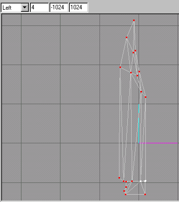

|
|
In order for us not to be able to accidentally chose a wrong vertex in our face creation, we will hide these selected vertices by clicking on "Edit->Hide Selection" on the menu selections.
Its time we sew up this back side of the knife blade by selecting the "Face" tool once again. We will be working in the "Back" viewport for this operation. Remember to use a counter-clockwise motion to make the faces to be appearing to face us and not turned inside out, so it would appear as if they are missing if we were to view it on the backside.
The vertices at the bottom may be a little tricky to complete as there are 4 of them close enough together that might cause some problems. You might avoid some of this by zooming in closer to see them. This is done by clicking on the "Selection" button to turn off the selection tool and first holding down the "Ctrl" key on your keyboard and dragging in the "Back" viewport to center the area to zoom in on. Then you will hold down the "Shift" key and drag in the "Back" viewport to zoom in. As you can see this is good for fine tuning those hard to get at vertices!
Now we will finish the back portion by clicking on the "Face" button to turn on the tool, then carefully creating the two final faces that sew the bottom of the blade to the left and right sides. (See the faces at the bottom of Figure 1.27).
The Texture mapping is going to be usually way off as new faces are added to the existing groups. The new faces will add themselves to an existing group, usually to the groups vertex that you first click on. We will have to select all of the faces we wish to put into a new group which we will name "Blade-back" group. (See Figure 1.27). Switch to the "Select" tool and turn on the "Faces" option. We will also be using the "Ignore Backfaces" option by clicking in the check box. It should have a check mark to indicate that it will not select backfaces to make our selection of these faces easier. Move to the "Front" viewport so that we can select the faces that we just have created. Now this is a bit odd that we should have to move to the "Front" viewport, when the faces we want to select are on the back with their faces towards us. Don't ask, I don't know why it was programmed this way.
Figure 1.27 Selected Faces to be regrouped
Switch to the "Groups" rollout and click the "Regroup" button. Rename this group to "Blade-back" group.
This group will have to have its texture aligned to it. The "Back" viewport is where we will be working to align the texture. If your "Texture Coordinate Editor" dialog box is still hanging around, perhaps you have minimized it, get it to show up so you can work with it. There is a drop down list box that contains all the names of the groups in it, click on the down arrow and select the "Blade-back" group. Chose the "Back" from the viewport drop down list, as we want it to apply the texture in the back 2d dimension. If you select the wrong 2d view of applying a texture, it may stretch the texture in a manner that will look deformed or like someone took a spray paint can and just streaked the paint on the sides. We want or model to appear as if looks real from all sides. This is the toughest part of what is called "Skinning" a model.
Click the "Region" button, and click and drag your mouse over the back area of the blade where it is dark. (See Figure 1.28).
Figure 1.28 Remapping the back side of the blade
Our job is not quite yet complete to move on to the handle as we need to finish our sewing work. We will have to unhide all the vertices that we have hidden from a a previous operation. Click "Edit->Unhide All" in the menu selections. Again, click on the "Selection" tool button in the "Model" rollout, and make sure it is set to "Vertex." We will also have to uncheck the "Ignore Backfaces" check box in the "Selection Options" portion. If you look at Figure 1.29, it will show you which ones need to be selected and hidden.Click on "Edit->Hide Selection" on the menu selections.

Figure 1.29 More Selected vertices to be hidden
We need to start working in the "Left" viewport to get at some of the vertices on this backside. The tiny areas will have to be zoomed in on to see how to make the faces. (See Figure 1.30). Again, click on the "Face" button and start to sew up this area.
Figure 1.30 Zoomed in area to create face
|
|